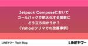

LINEヤフー Tech Blog
フィード

Yahoo!フリマ Android開発チームのJetpack Compose活用事例（BasicTextField編）
LINEヤフー Tech Blog
こんにちは。Yahoo!フリマのAndroid開発を担当している坂井です。私の開発チームでは、最近新しい画面を作る際にJetpack Compose（以下Compose）を用いて開発を行っています。...
1日前

コード品質向上のテクニック：第31回 同じ釜のプロパティ 1
1
LINEヤフー Tech Blog
こんにちは。コミュニケーションアプリ「LINE」のモバイルクライアントを開発している石川です。この記事は、毎週木曜の定期連載 “Weekly Report” 共有の第 31 回です。Weekly R...
5日前
2024年7月の技術系イベント予定 1
LINEヤフー Tech Blog
LINEヤフー株式会社では、技術に関するイベントや勉強会の主催・協賛などを行っています。最新情報は各リンク先でご確認ください。タイミングによっては、申し込み開始前や既に満席となっていることがあります。...
7日前

Jetpack Composeにおいてコールバックで肥大化する関数にどう立ち向かうか？（Yahoo!フリマでの改善事例） 2
LINEヤフー Tech Blog
こんにちは。Yahoo!フリマのAndroid開発を担当している寳田（たからだ）です。私たちのチームでは、Android開発では一般的なViewModel + Fragmentの構成を採用しています...
8日前
コード品質向上のテクニック：第30回 運命の赤い糸（透明） 1
LINEヤフー Tech Blog
こんにちは。コミュニケーションアプリ「LINE」のモバイルクライアントを開発している石川です。この記事は、毎週木曜の定期連載 “Weekly Report” 共有の第 30 回です。Weekly R...
12日前

テクニカルライターのチームで「目標」をどう決めたか
LINEヤフー Tech Blog
こんにちは、Dev Contentチームのmochikoです。LINEヤフー株式会社でテクニカルライターとして働いています。今日は、テクニカルライティングの専門チームで、私たちテクニカルライターが「...
14日前
Yahoo!フリマ Android開発チームの GitHub Copilot 活用事例
LINEヤフー Tech Blog
こんにちは。Yahoo!フリマのAndroid開発を担当している菅野です。私の開発チームではGitHub Copilotを導入し、開発の生産性を高めています。今回は私たちの開発チームがどのようにGi...
15日前
従来のCMSからLandPress ContentにCMSを移行する理由
LINEヤフー Tech Blog
弊社では3年前、従来のヘッドレスCMSの構造とパフォーマンスを改善した新しいヘッドレスCMS、LandPress Contentを社内向けに公開しました。その後、従来のCMSを使用していた多くのLI...
15日前
Extended Tokyo 2024を開催しました！
LINEヤフー Tech Blog
こんにちは。LINEヤフー株式会社 Developer Relationsの井上です。6月10日の深夜から6月11日にかけてExtended Tokyo 2024を開催しました。Extended T...
18日前
コード品質向上のテクニック：第29回 ゴルディアスの変数
LINEヤフー Tech Blog
こんにちは。コミュニケーションアプリ「LINE」のモバイルクライアントを開発している石川です。この記事は、毎週木曜の定期連載 “Weekly Report” 共有の第 29 回です。Weekly R...
19日前
大規模なRedis運用で生き残る方法
LINEヤフー Tech Blog
こんにちは。LINE Plus（韓国にある、LINEヤフー株式会社の子会社）のRedisチームでDBA業務を担当しているJeonghoon Kimです。私たちのチームはその名の通り、代表的なキーバリュ...
20日前
イベント駆動とドメインモデルの完全性を意識したアーキテクチャ設計
LINEヤフー Tech Blog
こんにちは。LINEヤフー株式会社で、出前館というプロダクトのサーバーサイドエンジニアをしている古田大志です。株式会社出前館はLINEヤフーのグループ会社です。資本業務提携を結んでいて、LINEヤフ...
21日前
コード品質向上のテクニック：第28回 制約にも相続税
LINEヤフー Tech Blog
こんにちは。コミュニケーションアプリ「LINE」のモバイルクライアントを開発している石川です。この記事は、毎週木曜の定期連載 “Weekly Report” 共有の第 28 回です。Weekly R...
1ヶ月前
コード品質向上のテクニックの記事一覧
LINEヤフー Tech Blog
私達は、高い開発生産性を維持するために、コード品質と開発文化の改善に注力しています。そのために様々な取り組みを行っているのですが、その 1 つとして Review Committee の活動があります...
1ヶ月前
コード品質向上のテクニック：第27回 依存も積もれば
LINEヤフー Tech Blog
こんにちは。コミュニケーションアプリ「LINE」のモバイルクライアントを開発している石川です。この記事は、毎週木曜の定期連載 “Weekly Report” 共有の第 27 回です。Weekly R...
1ヶ月前
Google I/O 2024: セッションよりも開発者との交流がよかった話
LINEヤフー Tech Blog
こんにちは、出前館開発本部に所属しているフロントエンドエンジニアのシュウ（@xingoxu）です。株式会社出前館に出向し、フロントエンドの開発を行っています。LINEヤフーでは、海外のカンファレンス...
1ヶ月前
【Code Review Challenge】解説７問目：単体テストのベストプラクティス #try! Swift Tokyo 2024
LINEヤフー Tech Blog
こんにちは。iOSアプリエンジニアのKiichiです。先日開催されたtry! Swift Tokyo 2024のLINEヤフー企業ブースでは、Code Review Challengeを行いました。...
1ヶ月前
Yahoo!知恵袋 フロントエンドをリアーキテクトしている話
LINEヤフー Tech Blog
はじめにこんにちは！ Yahoo!知恵袋の津村です。去年の11月からYahoo!知恵袋のフロントエンドシステムのリアーキテクトに取り組んでいます。この記事では、これまで抱えていた技術的な問題と、それ...
1ヶ月前
コード品質向上のテクニック：第26回 説明の計は一文目にあり
LINEヤフー Tech Blog
こんにちは。コミュニケーションアプリ「LINE」のモバイルクライアントを開発している石川です。この記事は、毎週木曜の定期連載 “Weekly Report” 共有の第 26 回です。Weekly R...
1ヶ月前
2024年6月の技術系イベント予定
LINEヤフー Tech Blog
LINEヤフー株式会社では、技術に関するイベントや勉強会の主催・協賛などを行っています。最新情報は各リンク先でご確認ください。タイミングによっては、申し込み開始前や既に満席となっていることがあります。...
1ヶ月前
【Code Review Challenge】解説６問目：SDKのコードで気をつけること #try! Swift Tokyo 2024
LINEヤフー Tech Blog
こんにちは。iOSエンジニアの松原です。普段はLINEヤフー社内でログ収集を行うSDKやLINEアプリの開発をしています。先日開催されたtry! Swift Tokyo 2024のLINEヤフー企業...
1ヶ月前
LINEヤフーの学生向けハッカソン Open Hack U 2024の様子をお届けします
LINEヤフー Tech Blog
こんにちは！LINEヤフーのローカル統括本部でエンジニアをしている大西です。LINEヤフーが主催する学生向けハッカソン「Hack U」をご存じでしょうか？ この記事では、東京・大阪で開催されたOpe...
1ヶ月前
FractalDB: LINEヤフーのオンプレミス・マルチテナンシー型データベースシステムの紹介
LINEヤフー Tech Blog
こんにちは、LINEヤフー株式会社でデータベース部門に所属している、今野です。現在は、先日LINEヤフー社内にて提供を開始したFractalDBの開発と運用を担当するチームに所属しています。Frac...
2ヶ月前
コード品質向上のテクニック：第25回 TL;DR: つまり...どういうこと
LINEヤフー Tech Blog
こんにちは。コミュニケーションアプリ「LINE」のモバイルクライアントを開発している石川です。この記事は、毎週木曜の定期連載 “Weekly Report” 共有の第 25 回です。Weekly R...
2ヶ月前
そのデータ活用、もういちどチェック！
LINEヤフー Tech Blog
こんにちは、プラットフォームエンジニアの中山です。みなさまのサービスや社内業務において、データを活用して課題を解決する機会は少なくないと思います。一方で個人データを取り扱う際には法律やパートナーとの...
2ヶ月前
【Code Review Challenge】解説5問目：Core Imageの実装テクニック #try! Swift Tokyo 2024
LINEヤフー Tech Blog
こんにちは、たなたつです。全社横断でアプリ開発の課題解決をしています。先日開催されたtry! Swift Tokyo 2024のLINEヤフー企業ブースでは、Code Review Challeng...
2ヶ月前
高性能な日本語マルチモーダル基盤モデル「clip-japanese-base」を公開しました
LINEヤフー Tech Blog
こんにちは。LINEヤフーのFoundation Models開発担当、横尾と岡田と朱です。私たちのチームでは、画像と言語のマルチモーダル基盤モデルの研究開発を行っています。この記事では我々が開発し...
2ヶ月前
コード品質向上のテクニック：第24回 遺産の価値
LINEヤフー Tech Blog
こんにちは。コミュニケーションアプリ「LINE」のモバイルクライアントを開発している石川です。この記事は、毎週木曜の定期連載 “Weekly Report” 共有の第 24 回です。Weekly R...
2ヶ月前
OSSのABC User Feedbackが軌道に乗るまで（5年間5度目の試み）
LINEヤフー Tech Blog
こんにちは。ABC Studioのヨンジェです。私は、LINE（現LINEヤフー株式会社）が2020年に資本提携した日本最大級のデリバリーサービス「出前館」のプロダクトを担当しています。世界中のIT...
2ヶ月前
音声認識のドメイン適応のために最適なデータセットを抽出する方法
LINEヤフー Tech Blog
こんにちは、音声認識技術の研究開発を担当している篠原です。この記事では、音声認識モデルのドメイン適応のために最適なデータセットを抽出する技術について紹介します。汎用データセットから目的ドメインのデー...
2ヶ月前
【Code Review Challenge】解説４問目：UICollectionView実装のベストプラクティス #try! Swift Tokyo 2024
LINEヤフー Tech Blog
こんにちは。iOSアプリエンジニアのOokaです。先日開催されたtry! Swift Tokyo 2024のLINEヤフー企業ブースでは、Code Review Challengeを行いました。Co...
2ヶ月前
コード品質向上のテクニック：第23回 return の切れ目が edge case の切れ目
LINEヤフー Tech Blog
こんにちは。コミュニケーションアプリ「LINE」のモバイルクライアントを開発している石川です。この記事は、毎週木曜の定期連載 “Weekly Report” 共有の第 23 回です。Weekly R...
2ヶ月前
2024年5月の技術系イベント予定
LINEヤフー Tech Blog
LINEヤフー株式会社では、技術に関するイベントや勉強会の主催・協賛などを行っています。最新情報は各リンク先でご確認ください。タイミングによっては、申し込み開始前や既に満席となっていることがあります。...
2ヶ月前
【Code Review Challenge】解説3問目：実行タイミングには気をつけて #try! Swift Tokyo 2024
LINEヤフー Tech Blog
こんにちは。Yahoo!カーナビでiOSアプリ開発を担当しているhasekenです。先日開催されたtry! Swift Tokyo 2024のLINEヤフー企業ブースでは、Code Review C...
2ヶ月前
kustomize開発リードを任され、表彰されるまでの経緯とOSS貢献へのアドバイス
LINEヤフー Tech Blog
はじめまして、LINEヤフー株式会社でKubernetes as a ServiceのPlatform Engineerを務めている小林と申します。私は業務で使っているという都合もあり、 kusto...
2ヶ月前
コード品質向上のテクニック：第22回 To equal, or not to equal
LINEヤフー Tech Blog
こんにちは。コミュニケーションアプリ「LINE」のモバイルクライアントを開発している石川です。この記事は、毎週木曜の定期連載 “Weekly Report” 共有の第 22 回です。Weekly R...
2ヶ月前
【Code Review Challenge】解説2問目：SwiftUIとSwiftData #try! Swift Tokyo 2024
LINEヤフー Tech Blog
こんにちは。天気・災害サービスiOSアプリエンジニアの冨田です。先日開催されたtry! Swift Tokyo 2024のLINEヤフー企業ブースでは、Code Review Challengeを行...
3ヶ月前
高速かつ高精度な音声認識処理を目指して 〜潜在変数モデルの応用〜
LINEヤフー Tech Blog
高速かつ高精度な音声認識処理を目指して 〜潜在変数モデルの応用〜こんにちは、LINEヤフーで音声認識エンジンの研究開発を担当している藤田です。今回のブログでは、LINEヤフーで取り組んでいる音声認識...
3ヶ月前
コード品質向上のテクニック：第21回 コンストラクタを叩いて渡る
LINEヤフー Tech Blog
こんにちは。コミュニケーションアプリ「LINE」のモバイルクライアントを開発している石川です。この記事は、毎週木曜の定期連載 “Weekly Report” 共有の第 21 回です。Weekly R...
3ヶ月前
try! Swift TokyoでOpen Source Swiftワークショップのインストラクターをしました
LINEヤフー Tech Blog
こんにちは！ モバイルデベロッパーエクスペリエンスチームのgiginetです。普段は主にLINEアプリ向けの開発環境を整えたり、ビルドシステムを構築したりしています。3月22日〜24日にSwif...
3ヶ月前
【Code Review Challenge】解説１問目：Task と enum には要注意 #try! Swift Tokyo 2024
LINEヤフー Tech Blog
こんにちは。iOSアプリエンジニアのKiichiです。先日開催されたtry! Swift Tokyo 2024のLINEヤフー企業ブースでは、Code Review Challengeを行いました。...
3ヶ月前
AI音声変換の実用化に向けて、AI音声変換ショート動画サイトを作って社内公開しました！
LINEヤフー Tech Blog
こんにちは。音声技術エンジニアの T.Ryo です。AIを活用した音声合成・音声変換の研究開発に従事しています。AI音声変換技術の実用化に向けた取り組みの一環として、社内で使える新しいショート動画サ...
3ヶ月前
コード品質向上のテクニック：第20回 異例の過剰包装
LINEヤフー Tech Blog
こんにちは。コミュニケーションアプリ「LINE」のモバイルクライアントを開発している石川です。この記事は、毎週木曜の定期連載 “Weekly Report” 共有の第 20 回です。Weekly R...
3ヶ月前
日本語のテキストの意味に基づき音楽を推薦するシステムの開発
LINEヤフー Tech Blog
こんにちは。LINEヤフーで音楽情報処理の研究開発をしている蓮実です。私たちのチームでは、音楽推薦システムの研究開発を行っています。今回はこの技術の概要についてお伝えいたします。なお、本記事の詳細な...
3ヶ月前
2024年4月の技術系イベント予定
LINEヤフー Tech Blog
LINEヤフー株式会社では、技術に関するイベントや勉強会の主催・協賛などを行っています。最新情報は各リンク先でご確認ください。タイミングによっては、申し込み開始前や既に満席となっていることがあります。...
3ヶ月前
コード品質向上のテクニック：第19回 チャイルドロック
LINEヤフー Tech Blog
こんにちは。コミュニケーションアプリ「LINE」のモバイルクライアントを開発している石川です。この記事は、毎週木曜の定期連載 “Weekly Report” 共有の第 19 回です。Weekly R...
3ヶ月前
try! Swift Tokyo 参加レポート
LINEヤフー Tech Blog
こんにちは。iOSアプリエンジニアの近藤です。2024年3月22日（金）〜24日（日）にわたり、try! Swift Tokyoイベントが開催され、LINEヤフー株式会社はGOLDスポンサーを務めまし...
3ヶ月前
LINE MUSICのプレイリスト認識機能を改善した話
LINEヤフー Tech Blog
こんにちは。LINE MUSICのサーバサイドエンジニアをしている森です。LINE MUSICでは（主に他社の）音楽サービスのプレイリストの画像から曲を認識し、曲をプレイリストに取り込む機能がありま...
3ヶ月前
コード品質向上のテクニック：第18回 関数を見て関係を見ず
LINEヤフー Tech Blog
こんにちは。コミュニケーションアプリ「LINE」のモバイルクライアントを開発している石川です。この記事は、毎週木曜の定期連載 “Weekly Report” 共有の第 18 回です。Weekly R...
3ヶ月前
try! Swift Tokyo 2024 にLINEヤフーのエンジニア3名登壇します（3/22・3/24）
LINEヤフー Tech Blog
2024年3月22日（金）から24日（日）の3日間にわたり開催される、try! Swift Tokyo 2024にて、LINEヤフー株式会社はGOLDスポンサーを務めます。協賛ブースでは「Code R...
3ヶ月前